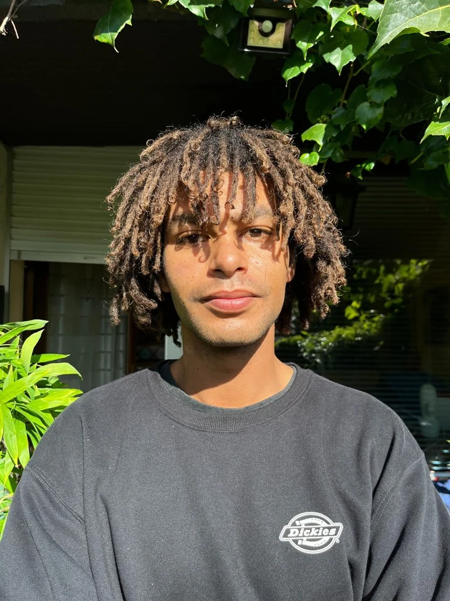

Article publié ·

J’étudie comment les territoires et les ménages s’adaptent à la raréfaction de l’eau. Mes recherches combinent la modélisation de l’économie régionale et l’analyse des usages domestiques.
Publication récente
Axes de recherche
Publications et projetsRareté de l’eau et économie régionale
Je modélise les effets d’une baisse de la ressource en eau souterraine sur l’économie de la Seine-Aval et compare des mesures d’adaptation, comme la réduction des fuites et les économies d’eau des ménages.
Lire le document de travail sur HALUsages domestiques et choix de l’eau
J’étudie les consommations à partir d’enquêtes, de factures et de données climatiques. Le projet CHOIXEAU s’intéresse au choix entre eau du robinet, eau filtrée et eau en bouteille.
Lauréat ELIPSS 2026 · Voir l’annonceEnseignement
Statistiques, microéconomie et macroéconomie à l’Université de Rouen Normandie.